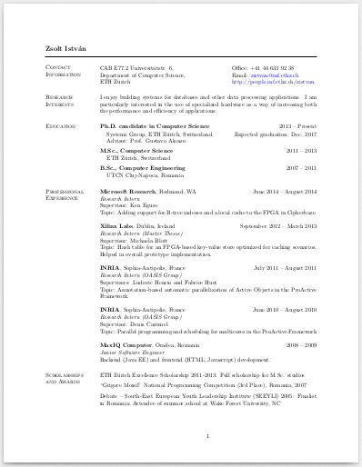
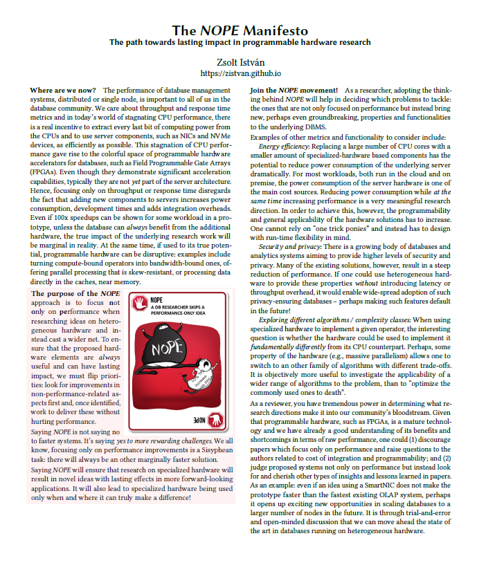

News
I am co-organizing the VLDB Summer School on Data Management in the Cloud again in 2024. We'll be soon opening the application period for interested MSc and PhD students. Participants will have the chance to attend four days of talks from outstanding speakers, to present their work, and to network in beautiful Cluj-Napoca. More information can be found here: https://vldb.org/summerschool/2024Research profile
The fundamental question I want to answer in my research is how to use specialization to make distributed systems and data processing operations more efficient in the datacenter. In my work, I aim to achieve the goals described in the [NOPE Manifesto].
See a selection of presentations about my work on this [YouTube playlist]:
Working with me
PhD students I currently supervise: You can find the current list of researchers working in the group by navigating to the [Systems Group website].
If you're looking for a PhD position: Even though there are no open positions being advertised at the moment, feel free to reach out in an email (include the usual documents).
If you're looking for a BSc/MSc thesis topic: Here is a [list of topics] under my supervision. More information about positions and theses can be found on [the group website].
~
From the time before my TU Darmstadt affiliation: [List of alumni in my group]
Publications
[My profile on Google Scholar]2023
Optimization Techniques for Hestenes-Jacobi SVD on FPGAs. L. Stasytis, Zs. István. 33rd International Conference on Field-Programmable Logic and Applications, September 2023 [to appear]
A Survey of Trusted Computing Solutions Using FPGAs. P. Rosero-Montalvo; Zs. István; W. Hernandez. IEEE Access 11: 31583-31593 (2023). [pdf]
Hybrid Anomaly Detection Model on Trusted IoT Devices. P. Rosero-Montalvo; Zs. István; P. Tözün; W. Hernandez. IEEE Internet of Things Journal (Early Access). [pdf]
2022
A Short Study of Recent Smart Storage Solutions for OLAP: Lessons and Opportunities. F. Faghih, Zs. István, F. Dinu. 13th International Workshop on Accelerating Analytics and Data Management Systems Using Modern Processor and Storage Architectures @ VLDB 2022 [pdf]
Always-trusted IoT -- Making IoT Devices Trusted with Minimal Overhead. Zs. István, P. Rosero, P. Bonnet. 5th Workshop on System Software for Trusted Execution (SysTEX@ASPLOS'22) [pdf]
2021
StreamChain: Building a Low-Latency Permissioned Blockchain For Enterprise Use-Cases. L. Kuhring, Z. István, A. Sorniotti, M. Vukolic. The 4th IEEE International Conference on Blockchain Melbourne, Australia, 2021. [pdf]
In-Storage Computation of Histograms with Differential Privacy. A. Tosa, A. Hangan, G. Sebestyen, Z. István.International Conference on Field-Programmable Technology (FPT'21), 2021. [pdf]
An Experimental Framework for Improving the Performance of BFT Consensus For Future Permissioned Blockchains M. Sit, M. Bravo, Zs. István. The 15th ACM International Conference on Distributed and Event-based Systems (DEBS'21), July 2021 [pdf] [repository]
The Case for Adding Privacy-Related Offloading to Smart Storage C. Mihali, A. Hangan, G. Sebestyen, Zs. István. The 14th ACM International Systems and Storage Conference (SYSTOR'21), June 2021 [pdf]
Software-Defined Data Protection: Low Overhead Policy Compliance at the Storage Layer is Within Reach! (Vision Paper) Zs. István, S. Ponnapalli, V. Chidambaram. Proceedings of VLDB, Volume 14, No. 7, March 2021 [pdf] [early version on arXiv]
Very Short Primer on Blockchain Technology for Database Researchers (Part of a Tutorial at EDBT'21) Zs. István.24th International Conference on Extending Database Technology (EDBT'21), Nicosia, Cyprus, 2021. [pdf]
2020
Towards Improving the Performance of BFT Consensus For Future Permissioned Blockchains. M. Bravo, Zs. István, MK. Sit. Technical Report on arXiv (2007.12637), July 2020 [pdf][talk at SPMA@EuroSys20 workshop]
FPGA-Accelerated Analytics: From Single Nodes to Clusters. Zs. István, K. Kara, D. Sidler. Now Publishers Foundations and Trends in Databases, to appear later in 2020 [draft manuscript available for free on request]
Let’s Add Transactions to FPGA-based Key-Value Stores! Zs. István. 16th International Workshop on Data Management on New Hardware (DAMON) held with ACM SIGMOD/PODS 2020. [pdf]
StreamChain: Rethinking Blockchain for Datacenters. L. Kuhring, Zs. István, A. Sorniotti, M. Vukolić. Technical Report on arXiv (1808.08406), Feb. 2020 [pdf]
2019
Specialize in Moderation -- Building Application-aware Storage Services using FPGAs in the Datacenter. L. Kuhring, E. Garcia, Zs. István. 11th USENIX Workshop on Hot Topics in Storage and File Systems (HotStorage'19), Renton, WA, USA, July 2019. [pdf and slides]
doppioDB 1.0: Machine Learning inside a Relational Engine. G. Alonso, Zs. István, K. Kara, M. Owaida, D. Sidler. IEEE Data Engineering Bulletin, June 2019. [pdf]
Something New Under The Sun: Thoughts on Optimizing the Performance of Blockchains. (Position paper). Zs. István. 9th Workshop on Systems for Multi-core and Heterogeneous Architectures co-located with EuroSys'19 (No Proceedings), Dresden, DE, 2019. [pdf]
The Glass Half Full: Using Programmable Hardware Accelerators in Analytics. Zs. István. IEEE Data Engineering Bulletin, March 2019. [pdf] [slides: IMDEA seminar]
Design Patterns for Code Reuse in HLS Packet Processing Pipelines. H. Eran, L. Zeno, Zs. István and M. Silberstein. 27th IEEE International Symposium on Field-Programmable Custom Computing Machines (FCCM'19), San Diego, USA, 2019. [pdf]
2018
StreamChain: Do Blockchains Need Blocks? (Workshop). Zs. István, A. Sorniotti, M. Vukolić. 2nd Workshop on Scalable and Resilient Infrastructures for Distributed Ledgers (SERIAL 2018) [pdf] [slides]
Providing Multi-tenant Services with FPGAs: Case Study on a Key-Value Store.
Zs. István, G. Alonso. A. Singla. 28th International Conference on Field Programmable Logic and Applications (FPL'18), Dublin, Ireland, August 2018. [pdf] [slides]
Code on Github: [code]
A Flexible K-Means Operator for Hybrid Databases. Z. He, D. Sidler, Zs. István, G. Alonso. 28th International Conference on Field Programmable Logic and Applications (FPL'18), Dublin, Ireland, August 2018. [pdf]
Active Pages 20 Years Later: Active Storage for the Cloud. Zs. István, D. Sidler, G. Alonso. In IEEE Internet Computing July/Aug 2018. [pdf]
2017
Caribou: Intelligent Distributed Storage. Zs. Istvan, D. Sidler, G. Alonso. To appear in VLDB 2017, Munich, Germany. [pdf] [slides] Resources for the larger project: [Code on Github] [Short Video]
Accelerating Pattern Matching Queries in Hybrid CPU-FPGA Architectures. D. Sidler, Zs. Istvan, M. Ewaida, G. Alonso. 2017 ACM SIGMOD/PODS Conference (SIGMOD'17), Chicago, US. [pdf]
2016
Low-Latency TCP/IP Stack for Data Center Applications. D. Sidler, Zs. Istvan, G. Alonso. 26th International Conference on Field Programmable Logic and Applications (FPL'16), Lausanne, Switzerland, September 2016. [pdf]
Runtime Parameterizable Regular Expression Operators for Databases. Zs. Istvan*, D. Sidler*, G. Alonso. (*=equal contribution). The 24th IEEE International Symposium on Field-Programmable Custom Computing Machines (FCCM'16), May 2016. [pdf]
Consensus in a Box: Inexpensive Coordination in Hardware. Zs. Istvan, D. Sidler, G. Alonso, M. Vukolic. 13th USENIX Symposium on Networked Systems Design and Implementation (NSDI '16), March 2016. [pdf] [slides+audio] [slides]
2015
A Hash Table for Line Rate Data Processing. Zs. Istvan, G. Alonso, M. Blott, K. Vissers. ACM Transactions on Reconfigurable Technology and Systems (TRETS) - Special FPL'13 Issue, March 2015. [pdf]
2014
Ibex -- An Intelligent Storage Engine with Support for Advanced SQL Off-loading. L. Woods, Zs. Istvan, G. Alonso. VLDB 2014, Hangzhou, China, September 2014. [pdf]
Histograms as a Side Effect of Data Movement for Big Data. Zs. Istvan, L. Woods, G. Alonso. 2014 ACM SIGMOD/PODS Conference (SIGMOD'14), Snowbird, Utah, US. [pdf]
2013
A Flexible Hash Table Design For 10Gbps Key-value Stores on FPGAs. Zs. Istvan, G. Alonso, M. Blott, K. Vissers. 23rd International Conference on Field Programmable Logic and Applications (FPL'13), Porto, Portugal, 2-4 September 2013. [pdf]
Achieving 10Gbps Line-rate Key-value Stores with FPGAs. M. Blott, K. Karras, L. Liu, K. Vissers, Zs. Istvan, J. Bar. 5th USENIX Workshop on Hot Topics in Cloud Computing (HotCloud'13), San Jose, CA, 25-26 June 2013. [pdf] [slides]
Multi-threaded Active Objects. L. Henrio, F. Huet, Zs. Istvan. 15th International Conference on Coordination models and Languages (COORDINATION 2013), Firenze, Italy, 3-5 June 2013. [pdf]
2011
Adapting Active Objects to Multicore Architectures. L. Henrio, F. Huet, Zs. Istvan, G. Sebestyen. International Symposium on Parallel and Distributed Computing (ISPDC 2011). [pdf]
Patents
Systems and Methods for Providing Distributed Tree Traversal Using Hardware-Based Processing (US 20160147779 A1). Kenneth H. Eguro, Zsolt Istvan, Arvind Arasu, Ravishankar Ramamurthy, Kaushik Shriraghav. Patent application filed 11/26/14.
Demos, Posters, Various
Extend, not Just Accelerate! Fresh Thinking Talk at DAMON workshop @ SIGMOD 2021. [slides]
In-Storage Data Transformations for Enforceable Privacy
[Poster] [1 min. teaser] for European Conference on Computer Systems (EuroSys'20), Crete, Greece, April 2020.
FPGA-Based Distributed Storage for Parquet Files
[Demo] for 45th International Conference on Very Large Data Bases (VLDB'19), LA, August 2019.
[Demo] for 29th International Conference on Field Programmable Logic and Applications (FPL'19), Barcelona, September 2019.
Enzian: a Research Computer for Datacenter and Rackscale Computing.
Poster for European Conference on Computer Systems (EuroSys'18), Porto, Portugal.
Caribou: A Platform for Building Smart Storage
[Poster] for European Conference on Computer Systems (EuroSys'17), Belgrade, Serbia, 24-26 April 2017.
doppioDB: A Hardware Accelerated Database
[Demo][Poster] for SIGMOD 2017, Chicago IL, 2017
Specialized Microservers for the Data Center
[Poster] for European Conference on Computer Systems (EuroSys'15), Bordeaux, France, 21-24 March 2015.
[Demo] for 25th International Conference on Field Programmable Logic and Applications (FPL'15), London, UK, September 2015.
Hybrid FPGA-accelerated SQL Query Processing
[Demo] for 23rd International Conference on Field Programmable Logic and Applications (FPL'13), Porto, Portugal, 2-4 September 2013.
Service and Events
Organization:
- ShadowPC Co-Chair for EuroSys'24
- Co-organizer of the VLDB Summer School in Cluj-Napoca 2024
- Co-organizer of the VLDB Summer School in Cluj-Napoca 2023
- Publicity co-chair for DEBS'22
- Co-chairing SPMA Workshop @Eurosys'22
- Workshop co-chair for EuroSys'21
- Co-chairing SERIAL Workshop @Middleware'20
- Co-chairing SPMA Workshop @Eurosys'20
- Co-chairing SERIAL Workshop @Middleware'19
- Co-chairing SFMA Workshop @Eurosys'19
- Co-organized birds of a feather session @Middleware'18.
Reviewing (can be out of date and incomplete):
Sigmod'24, EuroSys'24, CIDR'24, FCCM'24, DAMON Workshop'23, ATC'23, FCCM'23, SIGMOD'23, ASAP'23, ATC'22, Middleware'22, EuroSys'22, VLDB'22, EDBT'22, ANCS'21, SIGMOD'21, EDBT'21, HotCloud'20, SRDS'20, ASPLOS'20 (light), FCCM'20, EDBT'20, EuroSys Doctoral Workshop 2020 and 2019.
Invited reviews for ACM TACO and IEEE TKDE journals.
Previously working with me...
Students/Researchers I supervised up to/around my move to TU Darmstadt in Fall 2021 (if you are looking for alumni since then, please see the Systems Group website):- Mustafa Bayindir -- Bachelor Thesis Spring-Summer 2022
- Maximilian Huettner -- Master Thesis Spring-Summer 2022
- Duc Ming Nguyen -- Master Thesis Spring-Summer 2022
- Paul David Rosero -- PostDoc at ITU, 2021-2022 (together with Pinar Tozun)
- Yang Shan -- Master's Thesis Winter-Spring 2022 at TUDa
- Malou Landsgaard, Gustav Johansen, Lukas Offenberg -- Bachelor's Thesis Spring 2022 at ITU
- Neil Nielsen and Robert Bayer -- Semester Project Autumn 2021, Bachelor Thesis at ITU until May 2021 (with Pinar Tozun)
- Mircea Murasan -- Master Thesis at ITU until September 2021 (with Bernardo Machado)
- Paula Benedec -- Bachelor Thesis at UTCN, RO until July 2021 (with A. Hangan and G. Sebestyen-Pal)
- Andrei Tosa -- Bachelor Thesis at UTCN, RO until July 2021 (with A. Hangan and G. Sebestyen-Pal)
- Jonas Aargard -- Bachelor Thesis at ITU until May 2021 (with Philippe Bonnet)
- Claudiu Mihali -- BSc Thesis at UTCN, RO, June 2020 (with A. Hangan and G. Sebestyen-Pal)
- Mustapha Bouhali -- Visting PhD student (ENP Oran, DZ)
- Samuel Garcia -- BSc. until May 2020 (UPM, ES)
- Man-Kit Sit -- PhD intern until Apr. 2020 (ICL, UK)
- Lukas Stasytis -- BSc. intern until Dec. 2019 (KTU, LI)
- Lucas Kuhring, Srivatsan Lakshminarayanan -- MSc. thesis until June 2019 (UPM, ES)
- Matei Istoan -- Visiting Post-Doc until April 2019 (ICL, UK)
- Eva Garcia -- BSc. Intern until Feb. 2019 (from UAM, ES)
Teaching
👨🏫 See Systems@TUDa site for current courses
In the past...
TU Darmstadt:Performance Analysis and Modeling of Software Systems, WiSe 21/22 [CS Moodle]
Tutorials, most recently:Hyperledger Fabric Tutorial at EDBT2021 [details]
IT University of Copenhagen:Advanced Data Systems, Autumn 2021 [website]
Computer Systems Performance, Spring 2021 [website]
At UPM, Master Universitario en Software y Sistemas:Performance Analysis and Modeling of Software Systems, Fall 2019 [website] [seminars@UPM]
Building Data Processing Systems with FPGAs, Spring 2019 [website] [seminars@UPM]
Performance Analysis and Modeling of Software Systems, Fall 2018 [website] [seminars@UPM]
At ETH Zurich (teaching assistant):Advanced Systems Lab, Fall 2017 [website]
Data Modelling and Databases, Spring 2017 [website]
Advanced Systems Lab, Fall 2016 (Head Teaching Assistant) [website]
Data Modelling and Databases, Spring 2016 [website]
Advanced Systems Lab, Fall 2015 [website]
Programmieren und Problemlösen, Spring 2015 [website]
Advanced Systems Lab, Fall 2014 [website]
Programmieren und Problemlösen, Spring 2014 [website]
Advanced Systems Lab, Fall 2013 [website]
Data Modeling and Databases, Spring 2012 [website]
About Me
I am a Full Professor at the Technical University of Darmstadt, Germany where I focus on Distributed and Networked Systems topics, as part of the Systems@TUDa Group.
Earlier, I was an Associate Professor at the IT University of Copenhagen, Denmark, and an Assistant Research Professor at the IMDEA Software Institute in Madrid, Spain. I earned my PhD title from the Systems
Group at ETH Zurich, where I was advised by Prof. Dr. Gustavo Alonso.
I have a Master's degree in Distributed Systems from
ETH Zurich (2013), and an Engineering degree in Computer Science
from the Technical
University of Cluj-Napoca (2011).
Coordinates
Email: zsolt.istvan [ at ] cs.tu-darmstadt.de
Google Scholar Profile
Mastodon Profile
Curriculum Vitae
NOPE Manifesto
